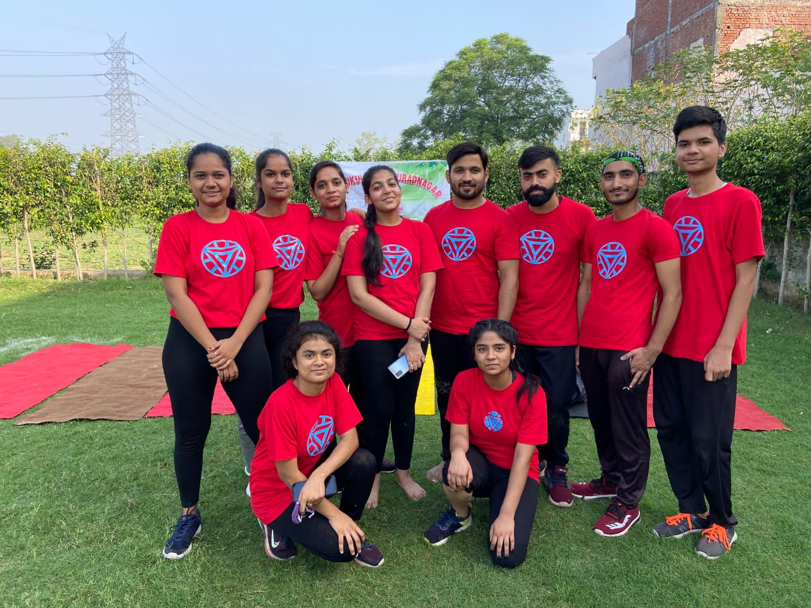

We have well trained and perfect yoga instructors.
Anubhav Verma
Pranayama is the perfect breathing exercise which increases the positive energy level in the body and removes toxins. Pranayama (breathing exercises) supplies more oxygen to self.
Priya Arora
With years of yoga experience, you're ready to explore new variations and more challenging asana. Refresh your practice with advanced yoga poses.
Inderjeet Tomar
Ashtanga Yoga is a style of modern yoga during the 20th century, often promoted as a modern-day form of classical Indian yoga. The style is hot and energetic, synchronizing breath.

Our Team
We can see that present time has become a very struggle full time for human being to survive on this planet because of increasing competition and desires and instability in relationships and emotions.
To fulfil his desires and to be ahead in the race of competition, he is working day to night to achieve that and has just become like a machine where he has just forgotten the words like happiness, joy, calmness, relaxation etc.. But still when he is unable to fulfil his desires, he feels unsatisfied. Because if seen in reality, there is no end to desires. Desires are unlimited and no one ever can make the desires fulfilled. But we never understand this and are keen on fulfilling them. And when unable to fulfil, feel sad and unsatisfied, Because of that he gets demoralized and turns negative. This negative thinking then brings him under peer pressure feeling himself responsible for not being able to do what he wants. This then results in a lot of stress, tension, depression and anxiety. Now, when he is full of stress and anxiety, unable to sleep properly, then to come out of all this, he chooses another path to make mind calm. For that, he starts taking a drink, smoke, drugs etc... Slowly and gradually, he becomes addicted to all this. The result of all this is that the person then suffers physically also. Because this path is not a permanent and correct way to get out of stress. But, because of lack of understanding at that time, he is unable to understand all this. So, he suffers from physical and mental illness. And hence his entire life is ruined.
We, here with the help of Asanas and Pranayama help the person to recover from physical illness and become physically strong and is a preparation for becoming mentally strong And with the help of our Yogic Philosophy, we help to recover from mental illness by changing the perspective of thinking for life.This helps them to have a positive look at life AND BE HAPPY and real solution to all the problems of life by his own. So, he becomes mentally strong. And we are happy to say that we have achieved 100% results in this. Because students who come to study at our centre, have experienced it and benefitted from this and have learned the, ”ART OF LIVING” at our centre. This is what is real Yoga, that teaches us ART OF LIVING.
So, if you are really looking for this studies of real Yoga, you are invited to join us and get benefitted and spread the real knowledge to others also. Studying here helps you to gain more confidence at your knowledge and spread the right and useful knowledge amongst others.